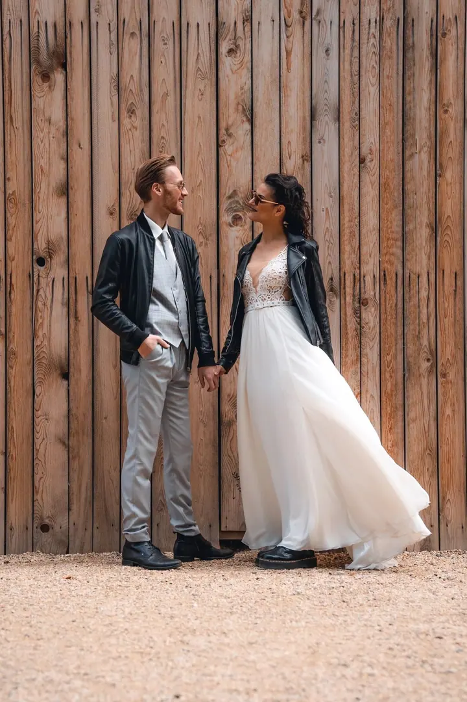
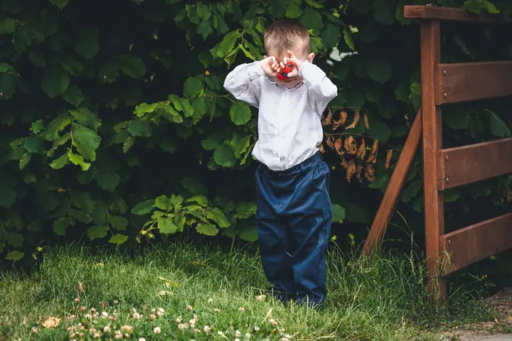

jedna
Svatby
Svatební den s vámi projdu od příprav až po obřad a hlídám detaily, přirozená gesta a úsměvy. Chci, aby fotky vyprávěly váš příběh i po letech.

Svatební a lifestylová fotografka · Morava

Jmenuji se Leona Rychlíková, je mi 26 let a jsem z Moravy. Nejraději fotím svatby, ale ráda se potkám i u portrétů nebo na koncertech a akcích. Na zakázku fotím také produkty.
Více o mně
Co fotím
jedna
Svatební den s vámi projdu od příprav až po obřad a hlídám detaily, přirozená gesta a úsměvy. Chci, aby fotky vyprávěly váš příběh i po letech.
dvě
Lifestylové portréty dospělých i dětí, přirozeně a bez strojeného pózování. Fotím venku i tam, kde se cítíte dobře.
Fotím koncerty, firemní i soukromé akce. Hudbu mám ráda, a tak se v klubu u pódia cítím jako doma.
Komerční fotky produktů na zakázku pro e‑shopy a sociální sítě. Díky grafickému designu a online marketingu vím, k čemu fotky budete potřebovat.
Detaily, gesta a úsměvy, které patří jen vám

Za objektivem
Ahoj, těší mě. Říkají mi Lea či Lee, Leoš či Leuš a taky Leontýna nebo Eman. Na volné noze se věnuji hlavně fotografii, příležitostně grafickému designu a poslední dobou objevuji i svět online marketingu, nejvíc ten na sociálních sítích.
Na svatbách se dívám po detailech, přirozených gestech a úsměvech, které ukazují, jací spolu jste. Chci, aby vaše fotky měly kvalitu a aby vám i po letech připomněly, jak se ten den cítil.
Focení mě baví i ve volném čase, hlavně na cestách. Dál mám ráda hudbu a hraní na hudební nástroje, sport spíš pro radost, knihy a novinky ze světa technologií, fotografie, videa a designu.
Leona
Ozvěte se přes kontaktní formulář, e‑mailem nebo telefonem. Napište termín, místo a co si představujete.
Probereme průběh dne, místa a vaše přání, abych věděla, na čem vám záleží nejvíc.
Jsem u toho nenápadně a s citem pro detaily. Pomůžu s pózováním, ale nejvíc si cením přirozených chvil.
Fotky pečlivě vyberu a upravím a pošlu vám je v online galerii, připravené ke sdílení i k tisku.
Portfolio
Otázky
Svatební focení začíná na 10 000 Kč. Přesnou cenu vám ráda spočítám podle délky a rozsahu dne.
Jsem z Moravy a fotím hlavně tady. Za svatbou nebo zakázkou ale po domluvě ráda přijedu i jinam.
Ano. Fotím portréty, koncerty, akce, produkty i psy. Stačí mi napsat, co potřebujete.
Napište mi přes formulář na webu nebo e‑mailem, případně zavolejte. Domluvíme termín a podrobnosti.